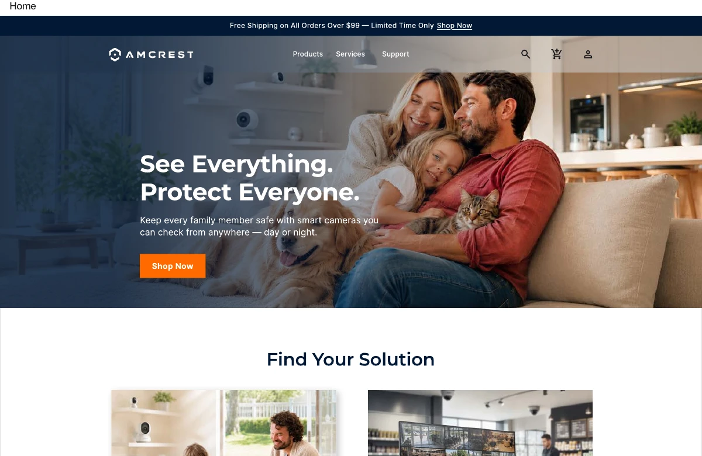

家庭远程照护
从家人与居住空间出发，理解设备与覆盖场景。
独立课程项目 / 2026
让安防产品的选购，从技术参数走向真实需求。
体验按设计稿制作的页面、选购路径与购物车交互。

DESKTOP DESIGN / AMCRESTAmcrest 项目以安防产品电商为设计场景。我独立完成品牌与受众分析、桌面线框、视觉规范，以及桌面与移动端页面设计，探索如何帮助用户理解产品、选择合适的方案，并找到后续服务。
这是课程中的概念 redesign，没有与 Amcrest 真实客户对接。页面中的产品信息、价格、评价与品牌数字属于设计展示内容。
设计同时考虑熟悉产品参数的用户，以及从“我想保护什么”出发的新用户。整体目标是让产品发现、比较与购买意图在一个连贯的体验中连接起来。
从家人与居住空间出发，理解设备与覆盖场景。
帮助识别多摄像头与完整系统的选购方向。
以门口、室内与安装便利性等具体需求组织信息。
用场景入口帮助新用户按家庭、企业、门口或车辆需求浏览；同时保留产品类别和筛选，支持更明确的选购。
从生活场景切入，再呈现信任信息、实际使用展示与推荐产品，逐步连接需求与购买动作。
把产品详情、选购帮助、云服务、支持中心和账户信息纳入同一套结构，让用户在不同阶段都能找到下一步。
调整导航、卡片排列、图文关系与步骤顺序，让桌面端的信息在较小屏幕上保持阅读层级。
围绕这条路径，补充搜索、云服务、支持中心和账户页面。演示网站已连接这条完整选购路径。
选择桌面端或移动端；点击任意设计图可放大查看。
用生活场景连接需求、信任与选购。
场景分类、筛选与推荐组合。
组织卖点、规格、配件与选购帮助。
服务说明、方案比较与设置步骤。
从帮助主题到常见问题与联系方式。
集中查看订单、设备与服务信息。
重排场景卡片、推荐产品和信任信息。
把选购信息组织为连续的纵向阅读。
项目中建立了色彩、字体层级与按钮样式，用于连接多个页面及不同屏幕尺寸。
案例内容与交互演示现已连接。可进入体验网站，浏览首页、产品发现、详情与购物车，并体验云服务与支持页面。
设计前后的对照、具体迭代记录，以及可用性验证。这些内容会在有对应材料后加入案例。